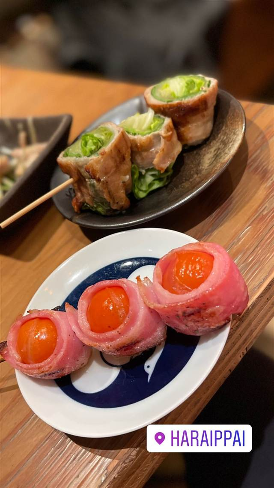

-
 サラダ 武蔵小杉
バカソウル アジア（BAKASOUL ASIA）
タイから家具・食器ごと仕入れた本場イサーン地方の屋台料理店
昼 ¥1,000～¥1,999 夜 ¥3,000～¥3,999
サラダ 武蔵小杉
バカソウル アジア（BAKASOUL ASIA）
タイから家具・食器ごと仕入れた本場イサーン地方の屋台料理店
昼 ¥1,000～¥1,999 夜 ¥3,000～¥3,999
-
 居酒屋 新丸子
えんがわ 武蔵小杉
東急線の高架下で味わう九州食材の炙り明太子
夜 ¥3,000～¥3,999
居酒屋 新丸子
えんがわ 武蔵小杉
東急線の高架下で味わう九州食材の炙り明太子
夜 ¥3,000～¥3,999
-

焼き鳥 新丸子・武蔵小杉
HARAIPPAI 武蔵小杉店
オリジナルブランド豊源鶏を使う昭和レトロな民家風焼き鳥店
昼 ¥1,000～¥1,999 夜 ¥2,000～¥2,999